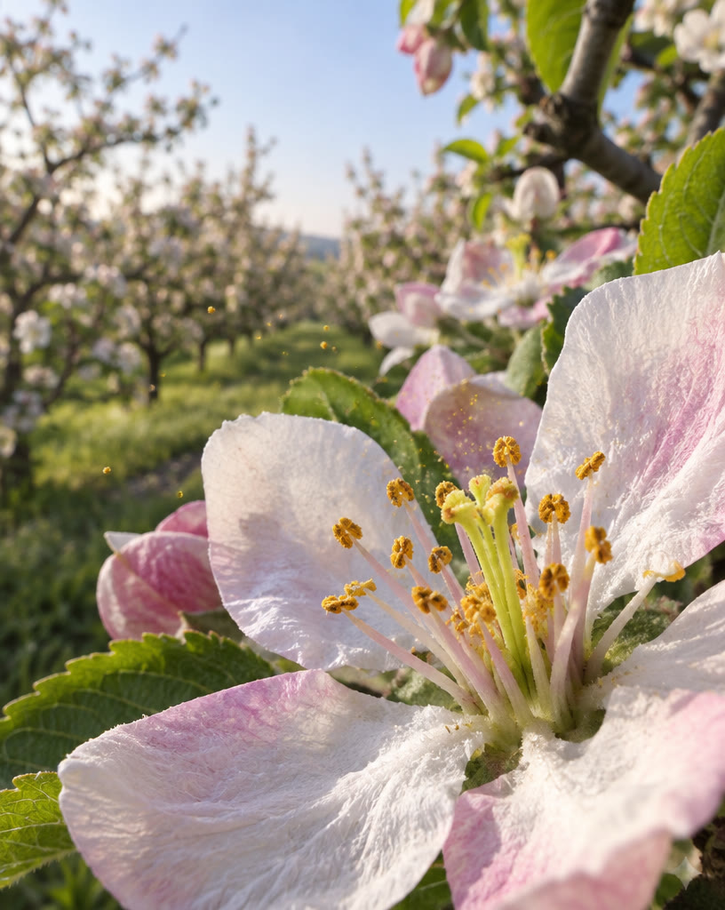
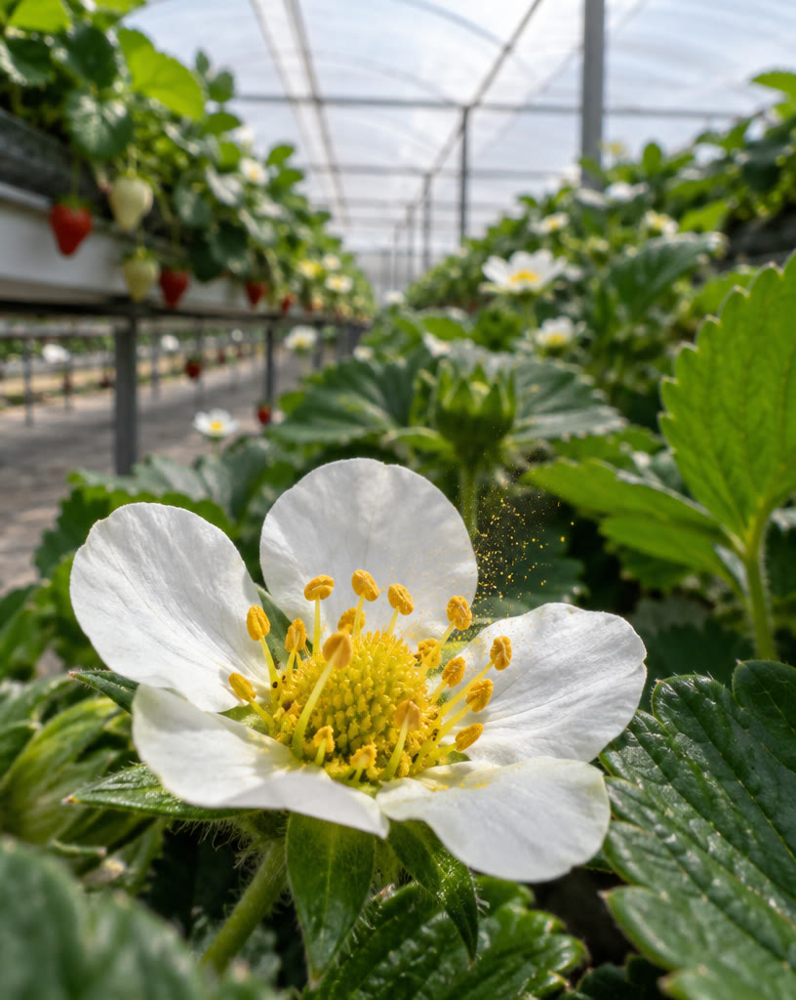
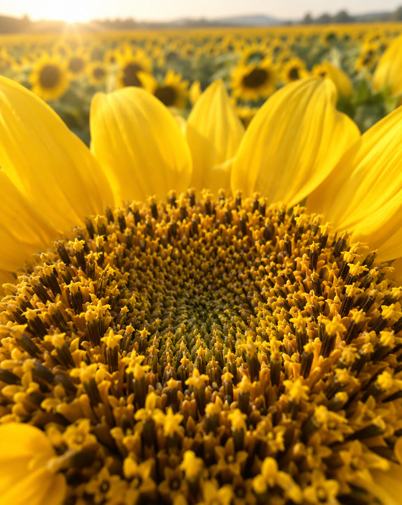
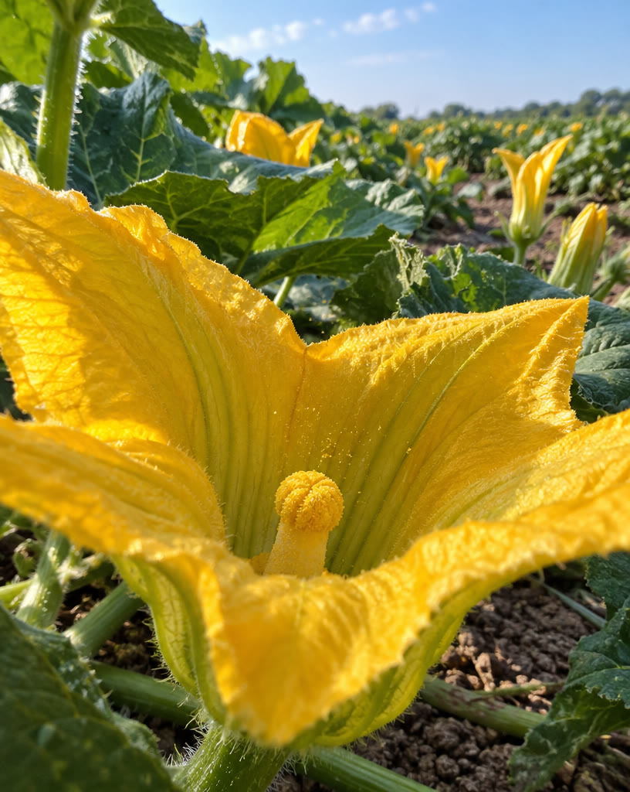

1080p ao vivo · <100 ms
Câmera frontal que transmite o voo ao vivo para o controle remoto.
Pilotar.
Polinizar.
Pousar.
A APIS é uma abelha robótica que voa flor a flor guiada por um controle remoto. Mais frutos no seu pomar, menos dependência do acaso.
Pelo app ou pelo joystick APIS, você vê o que a abelha vê e decide para onde ela vai.
O sistema cuida do equilíbrio e do vento. Você cuida da flor.
Role para entrar na visão delaRole para desmontar a APIS peça por peça.
Câmera frontal que transmite o voo ao vivo para o controle remoto.
Sensores que reconhecem flores abertas e indicam quais ainda não foram visitadas.
Pairam sobre a flor sem amassar pétalas.
Medem vento e umidade e ajustam o voo antes da rajada chegar.
Bateria de troca rápida, recarregada automaticamente no favo de pouso.
Cerdas macias prendem o pólen de uma flor e o entregam na próxima.
Pomar, estufa, campo aberto ou horta: se a flor está aberta, a APIS chega até ela. Estes são alguns lugares onde ela pode trabalhar.
Continue rolando



Conte qual é a sua cultura e quando começa a florada. A gente prepara o plano de voo.
A pré-venda da APIS está aberta. Escolha seu kit e garanta a primeira florada.